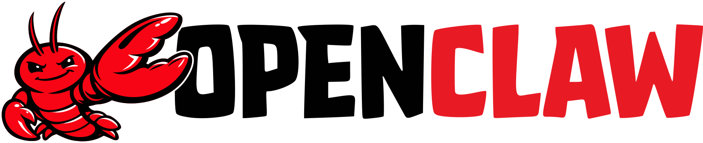

Use Google Chrome on this Mac as the agent’s browser. Install the relay extension, then paste your gateway token so it can reach the running agent.
NemoClaw — policy & network
With NemoClaw, the agent runs in a sandbox. Chrome on your Mac still talks to it over localhost. If the relay never connects, something on this machine or your org is blocking that path.
Sandbox policy (required for browser relay): allow the relay in your policy YAML. In a local terminal (not the sandbox shell), run:
nemoclaw <sandbox> policy-add
Pick the openclaw-browser preset, or edit YAML so loopback can reach ports 8080 and 18789 as needed.
If the relay still won’t connect:
Firewall / VPN: Allow 127.0.0.1 (loopback) traffic. Some VPNs block local ports — try disconnecting briefly or allow-listing local traffic.
Managed Chrome (work/school): IT may block Developer mode or unpacked extensions. Ask them to allow this extension folder, or to permit the relay policy for internal tools.
MDM / endpoint policy: If extensions are restricted, you may need an admin to approve unpacked loading or to deploy the extension via policy.
Keep Valnaa running with the agent started so SSH/port forwarding to the sandbox stays up while you use the relay.
1
Get the extension files
Download a zip or copy a ready-made folder into Downloads, then load it in Chrome as an unpacked extension.
Download .zip — unzip anywhere, then in Chrome choose the inner folder that contains manifest.json. Copy to Downloads creates openclaw-browser-relay-extension and opens it in Finder.
2
Path & gateway token
Advanced: exact folder Chrome should load. Token must match your running gateway (paste in the extension’s Options).
…
Relay 18792Gateway 18789
3
Load in Chrome
Developer mode → Load unpacked → Options → Save token.
Open and enable Developer mode.
Load unpacked → select the folder that contains manifest.json (from Downloads or the path above; in the file picker use ⌘⇧G to paste a path).
Open the extension’s Options, paste the gateway token, then Save.
Command Reference
Essential CLI commands for OpenClaw
Gateway & Running Tasks
openclaw gateway --port 18789 --bind loopback --allow-unconfigured run
Start the agent gateway on port 18789
The gateway is like a web server for your AI agent. When you start it, you can open http://localhost:18789 in your browser to chat with your agent through a nice UI. The --bind loopback flag means only your computer can access it (nobody from the internet). The --allow-unconfigured flag lets the gateway run even if you haven't set up an AI model yet — useful for first-time setup.
openclaw run "summarize my latest emails"
Run a one-shot task without opening the gateway
Think of this as giving your agent a quick errand. Instead of opening the full chat UI, you just type a task in quotes and the agent does it right in your terminal, then exits. Great for quick things like "check if my website is down" or "write a Python script that renames my photos". The agent will use whatever tools and skills it has available.
openclaw gateway --port 18789 --bind lan run
Start gateway accessible from your local network
Same as the regular gateway, but --bind lan makes it accessible from other devices on your Wi-Fi network (your phone, tablet, or another computer). Useful if you want to chat with your agent from your phone. Find your computer's local IP with ifconfig and visit http://YOUR_IP:18789 from any device on the same network.
Configuration
openclaw config get
View the current openclaw.json configuration
This shows all your agent's settings in one place — which AI model it uses, what tools are enabled, personality settings, channel connections, and more. Everything is stored in a file called openclaw.json in your home folder. If something isn't working, checking the config is usually the first step to figure out why.
openclaw config set models.providers.0.baseUrl https://api.example.com
Update a config value (replace with your key path and value)
Instead of editing the config file by hand, you can change individual settings with this command. The "path" uses dots to navigate the config structure — for example models.providers.0.baseUrl means "the first AI provider's API URL". You can change things like the AI model name, API keys, tool settings, or personality. After changing config, restart the gateway for changes to take effect.
openclaw config set agents.defaults.model gpt-4o
Change the default AI model your agent uses
This tells your agent which AI brain to use. Common choices are gpt-4o (OpenAI, smartest), gpt-4o-mini (cheaper and faster), claude-sonnet-4-20250514 (Anthropic), or any model your API provider supports. The agent will use this model for all conversations and tasks unless overridden per-agent.
Tools & Skills
openclaw config set tools.web.search.enabled true
Enable web search for your agent
When enabled, your agent can search the internet for real-time information. This is useful for questions about current events, looking up documentation, or finding answers that require up-to-date knowledge. Without this, your agent only knows what's in its training data.
openclaw config set tools.web.fetch.enabled true
Enable web page fetching for your agent
This lets your agent visit and read the content of web pages. Different from web search — search finds pages, fetch reads them. Together they let your agent research topics deeply: search for relevant pages, then fetch and read each one. Useful for summarizing articles, extracting data from websites, or monitoring web content.
openclaw config set browser.enabled true
Enable browser automation for your agent
This gives your agent a real browser (Chrome) that it can control — clicking buttons, filling out forms, taking screenshots, and navigating websites just like a human would. It's more powerful than web fetch because it can handle JavaScript-heavy sites, login flows, and interactive web apps. Uses more resources than simple web fetch.
openclaw config set memory.enabled true
Enable persistent memory for your agent
Without memory, your agent forgets everything between conversations. With memory enabled, it can remember important facts, preferences, and context across sessions. For example, it'll remember your name, your project details, or coding preferences you told it about last week. The agent decides what's worth remembering automatically.
Diagnostics & Info
openclaw doctor --fix
Diagnose common issues and auto-fix where possible
Like a health check for your agent setup. It looks for common problems — missing config, broken permissions, connectivity issues — and tries to fix them automatically. Run this whenever something isn't working right. Without --fix it only reports problems; with it, the command will try to repair them on the spot.
openclaw version
Check the installed OpenClaw version
Shows which version of OpenClaw you have installed. Useful when troubleshooting or checking if you need to update. You can update to the latest version by running npm install -g openclaw (or the install script from the OpenClaw docs).
openclaw --help
Show all available OpenClaw commands and flags
The built-in help page. Lists every command OpenClaw supports along with a brief description. You can also add --help after any subcommand (e.g. openclaw config --help) to see detailed options for that specific command.
Channels
openclaw config set channels.telegram.botToken "YOUR_BOT_TOKEN"
Connect your agent to Telegram
This connects your AI agent to a Telegram bot. First, create a bot via @BotFather on Telegram to get a bot token. Paste that token here. Once configured and the gateway is restarted, people can message your Telegram bot and your AI agent will respond — it's like giving your agent a phone number anyone can text.
openclaw config set channels.discord.botToken "YOUR_BOT_TOKEN"
Connect your agent to Discord
Makes your AI agent appear as a Discord bot in your server. Create a bot at discord.com/developers, get the token, paste it here, then invite the bot to your server. Your agent will respond to messages in channels it's added to. Great for team assistants, community support bots, or fun interactive agents.
openclaw config set channels.slack.botToken "xoxb-YOUR_TOKEN"
Connect your agent to Slack
Adds your agent to a Slack workspace. Create a Slack App at api.slack.com/apps, enable Socket Mode, add bot permissions, install it to your workspace, and paste the bot token here. Your agent can then respond to DMs and channel mentions — perfect for a team AI assistant that lives right in your company's Slack.
Agent Lifecycle
nemoclaw status
Check gateway and sandbox status
Gives you a quick health check of your NemoClaw setup. It shows whether the gateway (the server your agent runs on) is up, whether your sandbox (the secure container your agent lives in) is ready, and whether the agent is actively running. This is the first command to run if something feels off — it tells you exactly what's running and what isn't.
nemoclaw start
Start the agent and channel bridges (Telegram, etc.)
Boots up your AI agent and connects it to any messaging channels you've configured (Telegram, Discord, Slack). After running this, your agent is live — you can chat with it through the gateway UI or through the connected channels. The agent runs inside a sandbox, so it's isolated from your system for security.
nemoclaw stop
Stop the running agent
Shuts down your agent gracefully. It disconnects from all channels and stops the gateway. The sandbox itself stays around (your data and config are preserved), but the agent won't respond to messages until you start it again. Use this when you want to save resources or before making config changes.
nemoclaw restart
Restart the agent (stop + start)
Equivalent to running nemoclaw stop then nemoclaw start. Useful after changing configuration — the agent needs a restart to pick up new settings like model changes, tool toggles, or channel connections. Faster than stopping and starting manually.
nemoclaw onboard
Run the initial setup wizard again
Re-runs the first-time setup wizard that walks you through creating a sandbox, choosing a name, and configuring basic settings. Useful if you want to start fresh or set up a second sandbox. The wizard handles all the Docker and Kubernetes plumbing behind the scenes so you don't have to.
Policy Management
nemoclaw valnaa policy-list
List which network policy presets are applied to the valnaa sandbox
Your sandbox runs in a locked-down network by default — the agent can't access the internet unless you allow it. Policies are like permission slips for specific services. This command shows which services your agent is currently allowed to reach. For example, if you see "telegram" in the list, your agent can connect to Telegram's servers.
nemoclaw valnaa policy-add
Add network policy presets (interactive chooser)
Opens an interactive menu where you can pick which internet services your agent should be allowed to access. Available presets include telegram, slack, discord, npm (for installing Node packages), pypi (for Python packages), github, and more. This is how you grant your agent permission to reach specific APIs while keeping everything else blocked for security.
nemoclaw valnaa policy-remove
Remove network policy presets
Revokes network access for specific services. If you previously allowed your agent to access Telegram but no longer need it, remove that policy. This keeps your sandbox security tight — only allow what's actively needed. Changes take effect immediately, no restart required.
Sandbox Access & Management
openshell sandbox list --gateway nemoclaw
List all sandboxes on the nemoclaw gateway
Shows all the sandboxes (secure containers) managed by your NemoClaw installation. Each sandbox is an isolated environment where an agent can run. You'll typically see your valnaa sandbox listed here along with its status (Ready, Starting, etc.). Think of sandboxes as separate virtual computers your agents live in.
Drops you into a terminal session inside your agent's sandbox. It's like SSH-ing into a remote server — you can see files, run commands, install packages, and inspect what your agent has been doing. The sandbox is a full Linux environment. Type exit to leave. Useful for debugging, checking agent logs, or manually installing tools your agent needs.
Forward the gateway port from the sandbox to localhost:18789
The agent's gateway runs inside the sandbox on port 18789, but you can't access it directly from your computer. This command creates a tunnel so that http://localhost:18789 on your computer connects to the gateway inside the sandbox. It's like a pipe between your browser and the agent. This is what the Valnaa app does automatically behind the scenes.
openshell logs valnaa --gateway nemoclaw --follow
Stream live logs from the valnaa sandbox
Shows a live stream of everything happening inside your sandbox — agent startup messages, errors, tool usage, and more. The --follow flag keeps the stream open so new logs appear in real-time (like tail -f). Press Ctrl+C to stop watching. Essential for debugging when your agent isn't behaving as expected.
Warning: this permanently deletes the sandbox and everything in it — agent data, installed packages, files, and config. Use this only if you want to start completely fresh or remove a sandbox you no longer need. You can recreate it with nemoclaw onboard afterward. There is no undo.
Docker & Infrastructure
docker ps --filter name=openshell
List running OpenShell/NemoClaw containers
NemoClaw runs on Docker behind the scenes. This shows the Docker containers that make up your setup: openshell-cli (the helper sidecar) and openshell-cluster-nemoclaw (the Kubernetes cluster that hosts your sandbox). If both show "Up", the infrastructure is healthy. If one is missing or restarting, that's likely the source of any problems.
docker logs openshell-cluster-nemoclaw --tail 50
View recent logs from the NemoClaw cluster container
Shows the last 50 lines of logs from the Kubernetes cluster that runs your sandbox. Useful for diagnosing startup failures or infrastructure issues. This is lower-level than sandbox logs — it shows what the container orchestration layer is doing. Look for errors about pods failing to start, image pull issues, or resource constraints.
The nuclear option for fixing infrastructure issues. This restarts both Docker containers, which effectively reboots the entire NemoClaw stack. Your sandbox data is preserved (it's stored on a volume), but it may take a minute for everything to come back online. Use this when nemoclaw status shows problems that a simple restart doesn't fix.
openshell status
Check OpenShell gateway connection and version
Shows whether the OpenShell CLI tool can connect to the NemoClaw gateway and which version is running. If it says Connected, the underlying infrastructure is healthy. If it says Disconnected or fails, the cluster container may need a restart. This checks the infrastructure layer, not the agent itself.
(Loading...)
+
OpenClaw
Settings
Account, billing, runtime, and local data for this device.
Account
Email—
PlanChecking…
Runtime
Engine—
Model providers (optional)
Data
Agent config~/.openclaw
App data~/.openclaw-desktop
About
Versionv0.1.0
Sign in to start using your personal AI agent.
Waiting for sign-in from your browser...
Subscription Required
You need an active Valnaa subscription to use this app.
Choose Your Runtime
Select the AI agent runtime you'd like to use with Valnaa.

Works Everywhere
The original open-source AI agent. Runs directly on your machine — macOS, Windows, or Linux. No Docker needed.
Requires: Node.js (auto-installed)
NemoClaw
NVIDIA · Enterprise Security
Agent inside an NVIDIA OpenShell sandbox. Secure routing, network policies, and enterprise-grade isolation.